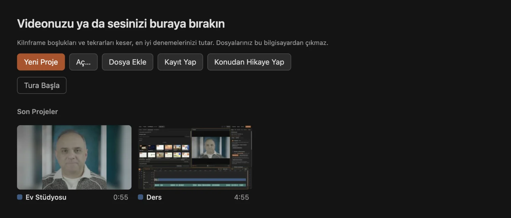

Projeler ve dosyalar
Bir proje, yanında kendi klasörü olan bir .kiln dosyasıdır. Her değişiklikte kendini kaydeder ve eski sürümlerini saklar.
Dosya menüsü
Sol üstteki Dosya menüsünde:
- Yeni Proje, Aç… ve Son Kullanılanlar.
- Başlangıç Penceresi: bırakma alanı ve Son Projeler.
- Kaydet ve Farklı Kaydet…
- Medyayı Bul… ve Projeyi Paketle… (aşağıda).
- Dışa Aktar… ve Kareyi Dışa Aktar…, Marka Kitleri…, Kayıt Yap… ve Dosya Ekle…

Başka bir yer seçmezsen yeni projeler Belgeler'deki Kilnframe klasörüne gider. Ev Stüdyosu.kiln'in yanında Ev Stüdyosu Dosyaları klasörü durur: uygulamanın proje için yaptığı animasyonlar, sesler ve görseller orada. İkisini birlikte tut.
Kendiliğinden kayıt
Projenin adının yanındaki Kaydedildi, son değişikliğin diske yazıldığını söyler. Basmayı hatırlaman gereken bir şey yok.
Geçmiş
Üst çubuktaki Geçmiş'in iki sekmesi var:
- Adımlar: proje açıldığından beri her değişiklik. Bir adıma dönmek için üzerine tıkla; İleri Al sonraki adımları geri getirir.
- Kaydedilen sürümler: projenin eski hâlleri. Son kayıtlar tek tek, eskileri çeyrek saatte bir saklanır. Bu Sürüme Dön birine döner; bu da geri alınabilir.

Dosyalar taşındıysa
Bir kayıt projenin bıraktığı yerde değilse klipte Eksik. Bulmak için tıklayın yazar. Dosya › Medyayı Bul…'u aç ve eksik dosyanın yanındaki Bul…'a bas. Birini bulduğunda aynı klasördeki diğerleri de onunla bulunur. Kilnframe kullanmadan önce aynı kayıt olduğunu denetler.
Projeyi başka bilgisayara taşı
Dosya › Projeyi Paketle…, proje dosyasını, klasörünü ve kullandığı her medya dosyasını yeni bir klasöre kopyalar. Klasör Seç…'e bas, tek dosya istersen zip seçeneğini işaretle ve Paketle'ye bas. Açık proje olduğu gibi kalır.